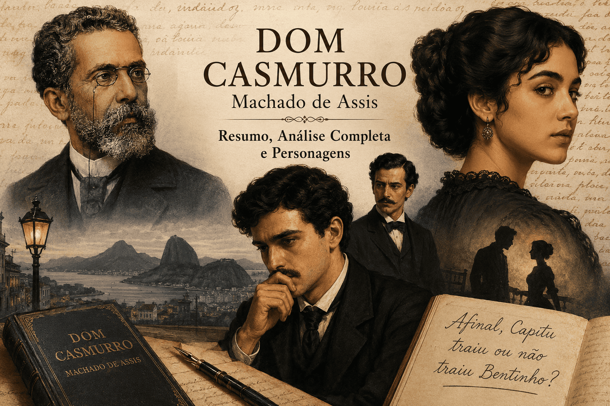

Dom Casmurro: Resumo e Análise Completa da Obra-Prima de Machado de Assis
Introdução
Dom Casmurro é um dos romances mais importantes da Literatura Brasileira e uma das obras mais estudadas em vestibulares, concursos e no ENEM. Publicado em 1899, o livro representa uma das produções mais maduras de Machado de Assis, principal nome do Realismo brasileiro e um dos maiores escritores da língua portuguesa.

A narrativa apresenta a história de Bento Santiago, conhecido como Bentinho, que decide escrever suas memórias para reconstruir o passado e compreender os acontecimentos que marcaram sua vida. O romance é famoso por abordar temas como ciúme, memória, traição, amor, subjetividade e a complexidade da mente humana.
Até hoje, leitores e críticos discutem uma das maiores questões da literatura brasileira: Capitu traiu ou não traiu Bentinho? A força da obra está justamente no fato de que Machado de Assis não oferece uma resposta definitiva. Em vez disso, constrói uma narrativa ambígua, conduzida por um narrador envolvido emocionalmente nos fatos que conta.
Neste artigo, você encontrará um resumo completo da obra, análise dos personagens, temas principais, características realistas e a importância de Dom Casmurro para a literatura nacional.
Ficha Técnica da Obra
| Informação | Dados |
|---|---|
| Obra | Dom Casmurro |
| Autor | Machado de Assis |
| Publicação | 1899 |
| Escola Literária | Realismo |
| Gênero | Romance |
| Narrador | Bento Santiago, em 1ª pessoa |
| Espaço | Rio de Janeiro |
| Tempo | Segunda metade do século XIX |
Quem foi Machado de Assis?
Machado de Assis (1839-1908) é amplamente reconhecido como o maior escritor da literatura brasileira e uma das figuras mais importantes da cultura nacional. Nascido no Rio de Janeiro, em uma família humilde, superou dificuldades econômicas e sociais para construir uma trajetória intelectual extraordinária.
Sua produção literária abrange romances, contos, crônicas, poesias e peças teatrais. Ao longo de sua carreira, Machado desenvolveu um estilo marcado pela ironia, pela crítica social e pela profunda investigação psicológica dos personagens. Essas características fizeram com que sua obra ultrapassasse os limites do contexto brasileiro.
Em 1897, participou da fundação da Academia Brasileira de Letras, instituição da qual foi o primeiro presidente. Sua fase realista teve início com a publicação de Memórias Póstumas de Brás Cubas, em 1881, obra que rompeu com os modelos românticos predominantes e inaugurou uma nova forma de narrar na literatura brasileira.
Para compreender melhor a trajetória do autor, veja também nosso conteúdo sobre Machado de Assis: vida, obras e características literárias.
Entre suas principais obras estão:
- Memórias Póstumas de Brás Cubas;
- Quincas Borba;
- Dom Casmurro;
- Esaú e Jacó;
- Memorial de Aires.
Resumo Completo de Dom Casmurro
O significado do título
O termo “Dom Casmurro” é um apelido dado ao narrador. Segundo Bento Santiago, a expressão se refere a alguém calado, fechado, solitário e introspectivo. O título já antecipa uma característica fundamental do protagonista: sua tendência ao isolamento e à reflexão amarga sobre o passado.
Já adulto e solitário, Bento Santiago decide escrever sua história para “atar as duas pontas da vida”, isto é, unir passado e presente por meio das lembranças. Ele tenta reconstruir a própria juventude, especialmente sua relação com Capitu, mas sua narrativa revela mais dúvidas do que certezas.
A infância de Bentinho
Bentinho cresce em uma família rica do Rio de Janeiro, cercado por figuras ligadas à tradição, à religiosidade e ao prestígio social. Sua mãe, Dona Glória, havia prometido que o filho seria padre caso sobrevivesse à infância. Essa promessa terá grande importância no desenvolvimento do enredo.
Ao lado da casa de Bentinho mora Capitu, amiga de infância por quem ele se apaixona. A relação entre os dois nasce de maneira espontânea, ainda na juventude, mas logo passa a enfrentar obstáculos familiares, religiosos e sociais.
Capitu é descrita como inteligente, observadora e extremamente perspicaz. Sua característica mais famosa são os chamados “olhos de ressaca”, expressão utilizada pelo narrador para destacar o olhar enigmático da personagem. Essa descrição contribui para tornar Capitu uma das figuras femininas mais complexas da literatura brasileira.
A promessa de Dona Glória
Apesar do amor entre Bentinho e Capitu, Dona Glória mantém a promessa religiosa e decide enviar o filho ao seminário. Para Bentinho, essa decisão representa uma ameaça direta aos seus sentimentos e ao futuro que imaginava ao lado de Capitu.
A separação causa sofrimento ao casal, mas também revela a força estratégica de Capitu. Enquanto Bentinho demonstra insegurança e hesitação, Capitu busca soluções práticas para impedir que ele siga definitivamente a carreira religiosa.
Esse conflito revela um dos aspectos centrais do romance: a oposição entre desejo individual e imposição social. Bentinho deseja viver seu amor, mas está preso às expectativas familiares e à promessa feita por sua mãe.
O seminário
No seminário, Bentinho conhece Escobar, um jovem inteligente, disciplinado e bastante habilidoso nos estudos e nos negócios. A amizade entre os dois cresce rapidamente, tornando-se uma das relações mais importantes do romance.
Durante esse período, Bentinho continua sofrendo pela distância de Capitu e busca maneiras de escapar do destino religioso que lhe foi imposto. Escobar passa a ser um importante aliado nessa tentativa, oferecendo apoio e ajudando o amigo a encontrar soluções para o problema.
O seminário também desempenha um papel simbólico na narrativa. Além de representar o conflito entre vontade pessoal e obrigação familiar, o ambiente evidencia a influência da religião na sociedade brasileira do século XIX. Machado de Assis utiliza esse cenário para discutir a força das convenções sociais e das promessas feitas em nome da fé.
Após diversas articulações envolvendo familiares e conhecidos, uma alternativa é encontrada para cumprir a promessa de Dona Glória sem que Bentinho precise seguir a carreira religiosa. Assim, ele consegue deixar o seminário e retomar seus planos ao lado de Capitu.
O casamento
Livre da obrigação religiosa, Bentinho casa-se com Capitu. O casamento parece representar a realização do amor de infância, vencendo os obstáculos impostos pela família e pela religião.
O casal vive anos aparentemente felizes e tem um filho chamado Ezequiel. A amizade com Escobar também permanece próxima, agora acompanhada pela convivência entre as famílias, já que Escobar se casa com Sancha.
No entanto, a aparente estabilidade do casamento começa a ser ameaçada pela insegurança de Bentinho. O narrador, ao recontar os fatos muitos anos depois, passa a apresentar pequenos episódios como possíveis sinais de uma traição que ele acredita ter ocorrido.
A morte de Escobar
Um dos momentos centrais do romance ocorre quando Escobar morre afogado durante um acidente no mar. A morte do amigo abala profundamente todos os personagens e marca uma mudança decisiva na percepção de Bentinho.
Durante o velório, Bentinho observa a reação emocional de Capitu diante do corpo de Escobar. Para ele, o olhar e a comoção da esposa indicariam um sentimento mais profundo do que uma simples tristeza pela perda de um amigo.
A partir desse episódio, Bentinho começa a desenvolver uma suspeita obsessiva: a de que Capitu teria mantido um relacionamento amoroso com Escobar. Esse momento inaugura a fase mais sombria da narrativa, dominada pelo ciúme, pela dúvida e pela interpretação subjetiva dos acontecimentos.
O nascimento das suspeitas
A partir da morte de Escobar, Bentinho passa a interpretar diversos acontecimentos do passado sob uma nova perspectiva. Pequenos detalhes antes considerados insignificantes passam a ser vistos como possíveis indícios de uma relação amorosa entre Capitu e seu melhor amigo.
O principal elemento que fortalece suas suspeitas é a aparência física de Ezequiel. Segundo o narrador, o filho apresenta semelhanças impressionantes com Escobar, tanto nos traços do rosto quanto em determinados comportamentos.
Entretanto, Machado de Assis evita fornecer qualquer prova objetiva da suposta traição. O leitor conhece os fatos apenas por meio das memórias de Bentinho, que escreve sua história muitos anos depois dos acontecimentos. Dessa forma, torna-se impossível saber se as suspeitas possuem fundamento ou se são resultado do ciúme crescente do protagonista.
Essa ambiguidade é justamente um dos aspectos mais inovadores do romance e uma das razões pelas quais a obra continua despertando debates mais de um século após sua publicação.
A separação
Convencido da suposta traição, Bentinho afasta-se emocionalmente de Capitu. A relação entre os dois se deteriora, e o narrador passa a tratar a esposa e o filho com frieza e ressentimento.
Com o tempo, Capitu e Ezequiel mudam-se para a Europa. A separação física confirma o rompimento afetivo da família, mas não resolve o conflito interior de Bentinho, que permanece preso às próprias suspeitas.
Capitu morre longe do Brasil, sem jamais confessar qualquer infidelidade. Anos depois, Ezequiel também falece. Bentinho termina a vida sozinho, cercado por lembranças, dúvidas e ressentimentos que nunca conseguiu superar.
Principais Personagens
Bento Santiago ou Bentinho
Bento Santiago é o narrador e protagonista da história. Já adulto, decide escrever suas memórias para reconstruir o passado e tentar compreender os acontecimentos que marcaram sua vida.
Por narrar os fatos em primeira pessoa, Bentinho controla tudo o que o leitor sabe sobre Capitu, Escobar e Ezequiel. Isso torna sua versão dos acontecimentos decisiva, mas também problemática, pois ele está emocionalmente envolvido na história.
Características de Bentinho:
- Ciumento;
- Inseguro;
- Possessivo;
- Melancólico;
- Reflexivo;
- Subjetivo em suas interpretações.
Capitu
Capitolina, conhecida como Capitu, é uma das personagens mais famosas e debatidas da literatura brasileira. Desde jovem, demonstra inteligência, autonomia e capacidade de compreender situações complexas com rapidez.
A personagem é descrita por Bentinho como alguém enigmática, especialmente por causa de seus “olhos de ressaca”. No entanto, como toda a descrição vem do próprio narrador, o leitor precisa considerar que a imagem de Capitu pode estar contaminada pelo ciúme e pela insegurança dele.
Características de Capitu:
- Inteligente;
- Determinada;
- Perspicaz;
- Independente;
- Estratégica;
- Misteriosa aos olhos do narrador.
Escobar
Escobar é o melhor amigo de Bentinho, conhecido ainda no seminário. Inteligente, prático e habilidoso, ele se destaca pela facilidade com números, negócios e relações sociais.
Sua presença é fundamental para o desenvolvimento do conflito central do romance. Após sua morte, Bentinho passa a suspeitar de que Escobar teria tido uma relação amorosa com Capitu.
Características de Escobar:
- Ambicioso;
- Hábil nos negócios;
- Carismático;
- Inteligente;
- Próximo de Bentinho e Capitu.
Dona Glória
Dona Glória é a mãe de Bentinho e representa a religiosidade, a tradição familiar e a autoridade materna. Sua promessa de fazer do filho um padre é o primeiro grande obstáculo ao romance entre Bentinho e Capitu.
Na obra, Dona Glória representa:
- Religiosidade;
- Tradição familiar;
- Autoridade materna;
- Influência da família sobre o destino individual.
Ezequiel
Ezequiel é o filho de Bentinho e Capitu. Sua presença é decisiva para o conflito final do romance, pois Bentinho acredita enxergar nele semelhanças físicas e comportamentais com Escobar.
A figura de Ezequiel intensifica a dúvida central da narrativa. Para Bentinho, ele seria a prova da traição; para o leitor, porém, essa interpretação permanece incerta, pois depende exclusivamente do olhar ciumento do narrador.
Análise Literária de Dom Casmurro
O narrador não confiável
Uma das maiores inovações de Dom Casmurro é a utilização do chamado narrador não confiável. Bentinho conta a história muitos anos após os acontecimentos, tentando convencer o leitor de sua versão dos fatos.
Sua narrativa é marcada por emoções pessoais, ciúmes, ressentimentos, memórias seletivas e interpretações subjetivas. Por isso, o leitor nunca tem acesso direto aos acontecimentos, mas apenas à maneira como Bentinho os recorda e organiza.
Essa característica torna a leitura mais complexa. Em vez de receber uma verdade pronta, o leitor precisa desconfiar, comparar informações e perceber as contradições do próprio narrador.
O tema do ciúme
O ciúme constitui o eixo central de toda a narrativa e é o sentimento que conduz a transformação psicológica de Bentinho ao longo do romance. Inicialmente apaixonado e feliz ao lado de Capitu, ele passa gradualmente a interpretar situações comuns como possíveis sinais de traição.
Machado de Assis demonstra como o ciúme pode alterar a percepção da realidade. À medida que a desconfiança aumenta, Bentinho torna-se incapaz de distinguir fatos concretos de interpretações subjetivas. Sua visão do mundo passa a ser filtrada pela insegurança e pela necessidade constante de encontrar evidências que confirmem suas suspeitas.
Muitos estudiosos defendem que o verdadeiro tema da obra não é a infidelidade de Capitu, mas sim o processo de autodestruição provocado pelo ciúme. Nesse sentido, o romance revela como sentimentos obsessivos podem comprometer relações afetivas e deformar a memória dos acontecimentos.
Memória e reconstrução do passado
A obra mostra que a memória não funciona como um registro perfeito dos fatos. Ao recordar sua vida, Bentinho reorganiza acontecimentos, seleciona episódios e atribui significados que podem não corresponder exatamente ao que ocorreu.
O narrador tenta reconstruir o passado para encontrar sentido em sua solidão presente. No entanto, quanto mais ele tenta explicar os acontecimentos, mais evidente se torna a instabilidade de suas lembranças.
Assim, Machado de Assis questiona a própria possibilidade de se alcançar uma verdade absoluta. Em Dom Casmurro, lembrar não significa recuperar fielmente o passado, mas reconstruí-lo a partir das emoções, frustrações e interesses de quem narra.
Crítica à sociedade do século XIX
O romance também apresenta uma crítica sutil à sociedade brasileira do século XIX. Machado de Assis expõe relações marcadas pelo patriarcalismo, pela autoridade familiar, pela influência religiosa e pela preocupação com as aparências sociais.
A trajetória de Bentinho mostra como as decisões individuais eram frequentemente condicionadas por valores familiares e religiosos. A promessa de Dona Glória, por exemplo, interfere diretamente no destino do filho, mesmo contra sua vontade.
A obra também revela as desigualdades e hipocrisias da elite brasileira da época. Por meio de ironia e observação psicológica, Machado expõe comportamentos sociais aparentemente respeitáveis, mas marcados por interesses, vaidades e contradições.
- Patriarcalismo;
- Casamentos marcados por interesses sociais;
- Hipocrisia social;
- Autoritarismo familiar;
- Influência excessiva da religião;
- Valorização das aparências.
Capitu traiu Bentinho?
A grande dúvida da literatura brasileira
Essa é provavelmente a pergunta mais famosa da literatura nacional. A dúvida sobre a possível traição de Capitu atravessa gerações de leitores porque Machado de Assis construiu a narrativa de forma ambígua.
O romance não apresenta uma cena que comprove a infidelidade de Capitu. Tudo o que existe são suspeitas, interpretações e lembranças narradas por Bentinho, um personagem dominado pelo ciúme e pelo ressentimento.
Argumentos que sustentam a traição
- Semelhança entre Ezequiel e Escobar;
- Emoção de Capitu no velório de Escobar;
- Desconfianças constantes do narrador;
- Ambiguidade no comportamento de Capitu, segundo Bentinho.
Argumentos contra a traição
- Ausência de provas concretas;
- Narrador dominado pelo ciúme;
- Relato subjetivo dos acontecimentos;
- Contradições presentes na narrativa;
- Possibilidade de Bentinho distorcer os fatos para justificar sua amargura.
A maioria dos estudos contemporâneos considera impossível comprovar a traição e enfatiza a falta de confiabilidade do narrador. Dessa forma, a pergunta “Capitu traiu Bentinho?” talvez seja menos importante do que outra questão: por que Bentinho precisa tanto acreditar nessa traição?
Características Realistas Presentes na Obra
Dom Casmurro apresenta diversas características associadas ao Realismo na Literatura Brasileira. Diferentemente do Romantismo, que valorizava o amor idealizado e os heróis moralmente elevados, o Realismo busca representar personagens complexos, contraditórios e psicologicamente instáveis.
Em Machado de Assis, o Realismo não aparece apenas na crítica social, mas principalmente na análise da mente humana. O autor investiga sentimentos como ciúme, vaidade, insegurança, ressentimento e desejo de controle.
- Análise psicológica profunda;
- Crítica social;
- Ironia;
- Questionamento dos ideais românticos;
- Complexidade moral dos personagens;
- Ausência de heróis idealizados;
- Interesse pela subjetividade humana;
- Visão crítica das instituições sociais.
A Linguagem e o Estilo de Machado de Assis
Um dos aspectos mais admirados de Dom Casmurro é sua linguagem sofisticada e, ao mesmo tempo, acessível. Machado de Assis utiliza um narrador que conversa diretamente com o leitor, criando uma sensação de proximidade e participação na narrativa.
A obra apresenta forte presença de ironia, recurso utilizado pelo autor para questionar comportamentos sociais, valores morais e até mesmo as conclusões do próprio narrador. Em diversos momentos, Bentinho parece tentar convencer o leitor de sua versão dos fatos, mas acaba revelando contradições que colocam sua credibilidade em dúvida.
Outro elemento importante é a fragmentação dos capítulos. Os capítulos são curtos e frequentemente interrompem a narrativa para apresentar reflexões, comentários ou lembranças. Essa estrutura inovadora aproxima o romance da maneira como a memória humana funciona, marcada por associações, interrupções e reconstruções constantes do passado.
Essas características contribuíram para transformar Dom Casmurro em uma das obras mais modernas da literatura brasileira e em um dos romances mais estudados da língua portuguesa.
A Importância de Dom Casmurro
A obra permanece atual porque aborda conflitos humanos universais, como amor, ciúme, insegurança, memória, confiança e solidão. Mesmo ambientado no século XIX, o romance continua dialogando com leitores contemporâneos porque trata de sentimentos e dúvidas presentes nas relações humanas.
Além disso, Dom Casmurro revolucionou a forma de narrar histórias no Brasil. Ao construir um narrador ambíguo e psicologicamente complexo, Machado de Assis rompeu com modelos narrativos tradicionais e antecipou procedimentos que seriam valorizados pela literatura moderna.
Por sua riqueza interpretativa, Dom Casmurro continua sendo uma das leituras mais importantes da literatura em língua portuguesa. A obra é constantemente cobrada em vestibulares e no ENEM, especialmente por sua relação com o Realismo, sua análise psicológica e sua construção narrativa ambígua.
Conclusão
Dom Casmurro é muito mais do que uma história sobre uma possível traição. O romance investiga os limites da memória, os efeitos destrutivos do ciúme e a dificuldade de distinguir verdade e interpretação.
Ao criar um narrador que pode estar enganando os leitores — ou a si mesmo —, Machado de Assis produziu uma das obras mais sofisticadas da literatura mundial. A grandeza do romance está justamente na impossibilidade de uma resposta definitiva.
Mais de um século após sua publicação, a pergunta permanece aberta: Capitu traiu Bentinho? Talvez a verdadeira intenção de Machado nunca tenha sido responder essa questão, mas mostrar como a verdade pode ser construída a partir de diferentes perspectivas.
Referências
- ASSIS, Machado de. Dom Casmurro. São Paulo: diversas edições.
- BOSI, Alfredo. História Concisa da Literatura Brasileira. São Paulo: Cultrix, 2006.
- CANDIDO, Antonio. Formação da Literatura Brasileira. Rio de Janeiro: Ouro sobre Azul, 2014.
- SCHWARZ, Roberto. Um Mestre na Periferia do Capitalismo: Machado de Assis. São Paulo: Duas Cidades, 2000.
- MOISÉS, Massaud. A Literatura Brasileira Através dos Textos. São Paulo: Cultrix, 2012.
- CEREJA, William Roberto; MAGALHÃES, Thereza Cochar. Literatura Brasileira: em diálogo com outras literaturas e linguagens. São Paulo: Atual Editora.
- FARACO, Carlos Emílio; MOURA, Francisco Marto de. Língua e Literatura. São Paulo: Ática.
Explore Outros Conteúdos
Continue seus estudos acessando outras seções do site Mestre Kira: